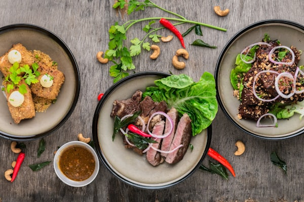

Authentic Filipino Cuisine
Restaurant in San Jose del Monte
★ - Based on - Google reviews
Blk. 17 Lot 50 North Gate Sarmiento Homes, Muzon, San Jose del Monte, Bulacan
Our Story
About Nanz Restaurant and Catering
Nanz Restaurant and Catering brings authentic Filipino cuisine to the heart of San Jose del Monte, Bulacan. We specialize in creating memorable dining experiences with our carefully crafted dishes that celebrate the rich flavors of Filipino cooking.
Whether you're looking for a satisfying meal at our restaurant or professional catering services for your special events, Nanz is committed to delivering delicious food made with love and the finest ingredients.
Learn More
Gallery
Our Food & Ambiance



What Customers Say About Nanz Restaurant and Catering
- rating based on - Google reviews
— [Customer Name] ([Time ago])
— [Customer Name] ([Time ago])
— [Customer Name] ([Time ago])
Contact Us
Address
Blk. 17 Lot 50 North Gate Sarmiento Homes, Muzon, San Jose del Monte, Bulacan, Philippines
Phone
+63 919 008 6876Hours
| Monday - Friday: | - |
| Saturday: | - |
| Sunday: | - |
Social
Facebook